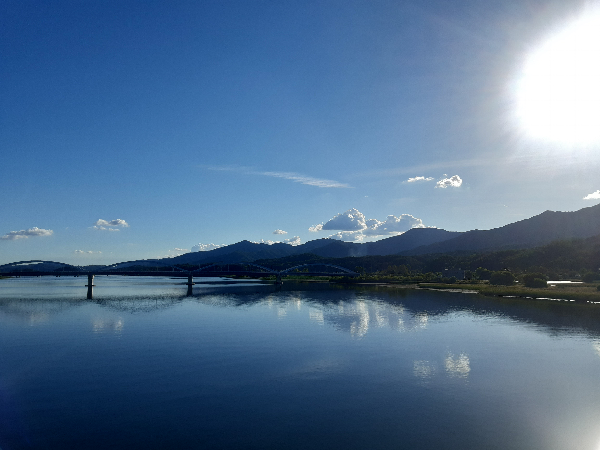
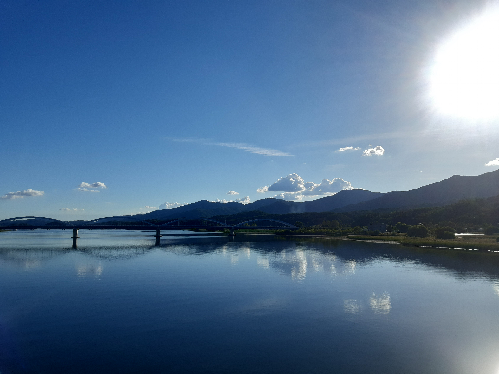
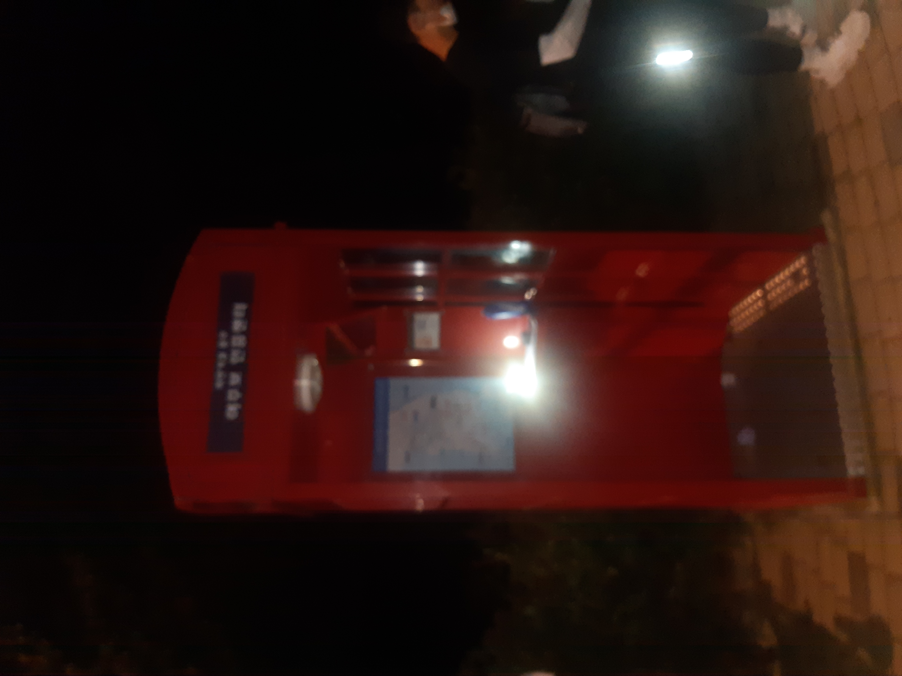
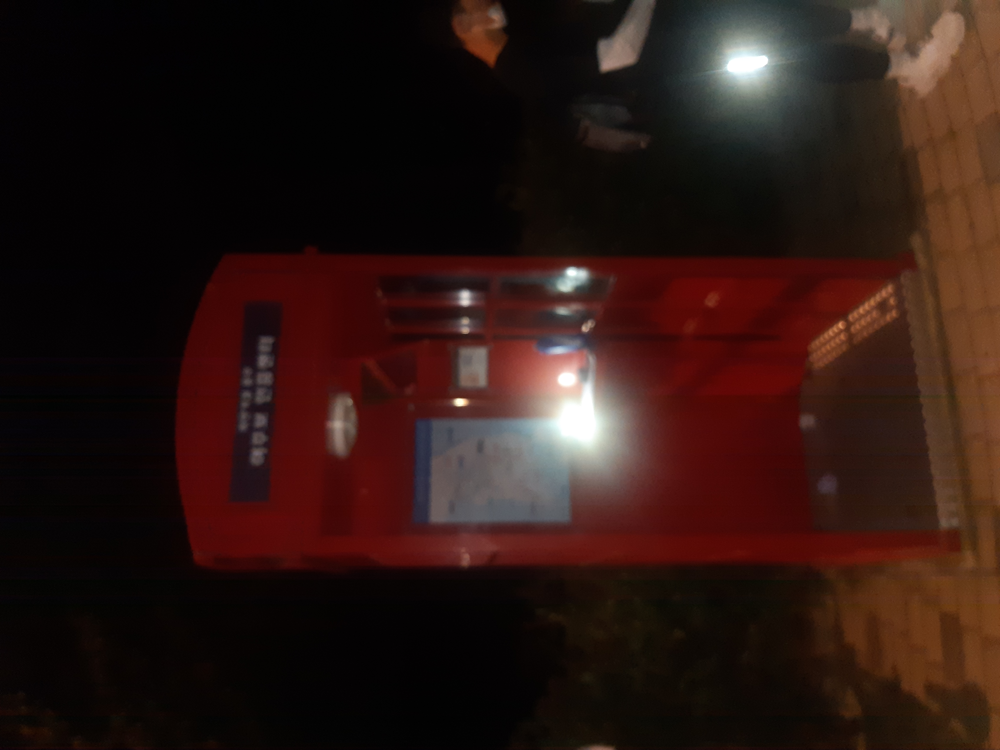

Story [국토종주편]
Story [국토종주편]1일차 이야기 : 수인분당선 신포역 ~ 여주보 [167.1km]
오랫동안 원하고 꿈꿔왔던 자전거 국토종주를 21년에 드디어 시작하였다..!
작년 사고로 인해 실패한 경험이 있어서 출발전부터 별탈없이 무사히 다녀오게 해달라고 빌었던 것 같다.
결과는 사고없이 633km 완주 대 성공!!

<첫 날 조금 빡세게 타구 2~5일차 편하게 타자>를 목표로 삼고 출발!
1일차 목표 달성을 위해 정서진도착이후, 평속28~30km의 속도로 서울을 향해 달렸다.
그 결과 서울 구간은 빠르게 지나갈 수가 있었다~
서울을 벗어나면 바로 하남-구리 구간의 멋있는 자연 풍경과 팔당대교 너머 초계국수집이 기다리고 있다.
이 구간은 국토종주때 뿐만 아니고도 자연을 만끽하려고 자주 라이딩하던 구간이였음에도 좋았다.
그래서 사진도 많이 찍고 초계국수 집에서 점심도 해결하고 능내역인증부스를 향해 나아갔다.

 초계국수집 전경 + 초계국수
초계국수집 전경 + 초계국수
초계국수를 먹은 후에도 여주보까지 가야했던 우리는 쉴 틈이 없었다.
그래서 바로 능내역을 향해 출발하였고 금새 북한강철교까지 도착하였다.
북한강철교구간 또한 경치가 좋기로 유명했기에 갈 길이 멀었던 우리도 사진을 안 찍을 수가 없었다.
 
북한강 자전거길 시점인 밝은 광장과 북한강 철교에서 바라본 남한강의 모습..!

북한강 자전거길 시점인 밝은 광장과 북한강 철교에서 바라본 남한강의 모습..!
멋진 풍경을 뒤로한 채 양평군립미술관인증부스를 향해 또다시 달렸다.
이 구간부터는 슬슬 체력이 바닥나기 시작해서 자신과의 싸움이 시작된 구간이였다.
이때부터는 너무 힘들어서 남아있는 사진도 많지 않다ㅠㅠ
하지만 우리는 자신과의 싸움에서 이겨내서 양평군립미술관을 넘어 후미개고개를 넘어갔다.
이제 해가 져물고 체력은 방전되기 일보직전에 맞이한 후미개고개여서 너무 힘들었으나 그때 같이 넘던 할아버지 한 분께서 화이팅하자고 외쳐주셨고 그 응원에 힘입어 고개를 넘게 되었다.
그렇게 후미개고개를 넘어 이포보를 도착했을땐 완전히 해가 저 문 다음이였다.
 불켜진 이포보의 모습
불켜진 이포보의 모습
이포보에서 잠시 휴식을 취한 우리는 마지막 목표인 여주보를 향해서 1일차 마지막 폐달링을 시작하였다.
이포보와 여주보 사이에는 과거에 활주로로 이용되던 구간이 있는데 날이 어두워서 보름달을 제외하곤 아무것도 보이지가 않았다ㅠ
그렇게 깜깜한 자전거도로를 몇 분 달린 후 1일차 목표지인 여주보인증부스에 도착하게 되었으며, 도착하자마자 숙소를 잡고 씻고 쉬었다.
 
1일차 마지막 인증부스인 여주보인증센터 도착!

1일차 마지막 인증부스인 여주보인증센터 도착!
1일차 목표를 달성한 기쁨도 잠시.. 다음날 맞이할 소조령과 이화령을 넘어야 한다는 떨림과 함께 잠을 잤다